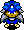
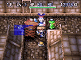

风来之西林2 鬼袭来！西林城！～游戏开发者访谈～
江
慎
一
郎
专
访
本访谈出自Gpara日文网站，由
kenyo
倾力翻译，禁无断转载！
Chapter1.就这样『西林2』的开发工作开始了！
记者：『西林2』的开发工作是从什么时候开始的？
褰慎一郎：西林SFC版开发完成后，我们就开发了GB版『风来的西林GB ～月影村怪物～』，说起来西林系列也算有了续作。那个时候，还没有将新作限定在西林系列，只是准备开发『不思议迷宫』系列的游戏新作，就这样我们开始了开发工作。
记者：那么从SFC版开发完成后就开始『西林2』的开发工作了吗？
褰慎一郎：不是的，当时还没有在N64上开发的打算，在研究N64的期间，我们仅是开始了西林2的初步企划。由于在此之前必须先完成GB版的开发，GB版开发终结后，我们才开始了正式的企划工作。
记者：褰先生在『西林2』的开发里担任什么工作呢？
褰慎一郎：是监督和剧情脚本。
记者：监督的工作主要是做什么呢？
褰慎一郎：仅仅是看着别人做就行了（笑），向任天堂的人说“对不起”之类抱歉的话，就是监督的工作（笑）。
记者：全部有多少人参与开发呢？
褰慎一郎：这个嘛，光是我们新招募的游戏制作者也有相当数量，所有开发者的名字阵容是壮观的。
记者：游戏制作过程中有未被采用的构思吗？
褰慎一郎：关于大家现在看到的西林城的样子，原先构思不是这样的，而是有很大的不同，后来选了多个方案才定了现在的形状。此外，城内以及迷宫中没有被采用的构思也是有的。至于『西林2』中大部分没有被采用的构思，我们倒是用于『特鲁内克2』了。
记者：通过综合玩家的意见，增加了可以入城和装饰城等等的新设定是吗？
褰慎一郎：嗯，入城的话什么都可以做，装饰城所需的饰物，在迷宫内寻找或者完成剧情才能入手应该会比较好吧，基于这样的想法，在开发的最后阶段就设定成这样子了。
记者：将故事设定在西林的童年时期，是一开始就决定了吗？
褰慎一郎：我们在设定游戏中建城这一部分时决定的。分析整个剧情后，自然会产生「一人建的城？」这样的疑惑。我们查阅过江户城的资料，建城的工作量异常巨大，单凭一人之力是无法完成的。最初我们设定了由村人不断协力来建城这样的剧情，主要由村人建城，西林只要收集到必要的材料就可以了。然而又有人置疑「那样子建城的话，就不是“我的城”了」（笑）。我们最终推翻了以前的构思，将故事设定在西林的童年时期会由于西林个人力量的不足而比较有趣。
Chapter2.2D与3D，哪一种比较容易制作呢？
记者：从2D到3D，会比较难制作吗？
褰慎一郎：现在来说，哪一种都是一样的。当时由于还没有吃透N64的开发技术，开发时遇到了很多麻烦，我们靠不断摸索积累了不少经验。
记者：做成3D之后，在迷宫一些有墙壁挡住而看不到的地方踩中机关的人好像特别多啊。
褰慎一郎：是的，这种事会发生的。真的很对不起（笑）。毕竟，像这种第三人称视点的游戏，稍微转一下方向就会晕菜的大有人在，而且从旁边看的方向感也不是很好，以致会处于进退维谷的境地。3D的迷宫会有一些看不到的死角，这些地方有机关存在的话难免会很容易踩中，我们还在不断摸索解决这个问题的最佳方法。
记者：好像使用视点切换就能够解决了呀。
褰慎一郎：嗯，最初我们有想过的。但如果不像游戏设定那样，而加上视点切换的话，对于3D较弱的玩家会使其连东南西北也分不清的。基本上视点方面与SFC版比较接近，方便转换面对方向。关于视点切换，其实我们是非常想实现这个系统的，但是应付不了的部分还是蛮多的。比如怪物房间，在画面上必须要出现很多怪物，这样子要怎么做呢？所以，我们放弃了这一构思，采用了2D与3D融合的模式，基本上有效地解决了视点方面的问题。
记者：CD-ROM与卡带，哪一种载体比较好呢？
褰慎一郎：卡带的话成本比较高，但卡带的读取速度是CD-ROM所无法比拟的。西林的部分系统比如继承SFC版的肉系统，即时记忆系统等等，在CD-ROM上比较难实现或者暂时无法解决。鉴于这个原因，我们认为卡带载体比较适合西林系列。
Chapter3.至鬼之岛为止游戏难度设定比较简单的理由？
记者：突破鬼之岛迷宫ENDING后，好像自由度就比较大了。
褰慎一郎：是的，原本就是这样一个游戏，这就是玩家从游戏中获得快乐的其中一部分。但是像某些游戏单纯自由而剧情较少的话，我想这个游戏是比较失败的。就总的来说，并非完全突破鬼之岛迷宫才有较大自由度，相信玩过的人就能体会到了。迄今为止西林系列能够坚持看到ENDING的人是比较少的，为了让更多的人玩这个游戏时不会太吃力，所以把ENDING之前的游戏难度设定得比较容易。
记者：SFC版的难度好像有点过分呀。
褰慎一郎：这个，是稍微过分了点。大部分人爬到“桌子山”（テ`ブルマウンテン）就挂掉了（笑）。但是，SFC版如果既降低了难度，又能保持有趣好玩的话是很难做到的。所以怎样才能有趣好玩又难度适中就是我们制作『西林2』的主题，可惜的是随着我们不断的制作却始终无法完美实现，只能在两者之间取一个平衡点。
记者：BOSS好像设定得较强了些。
褰慎一郎：我们在制作这部分时，考虑到无论SFC版还是GB版的BOSS都很弱，总该设定一下没有那么容易死吧。例如仅仅几拳就KO，利用“替身之杖”就简单杀掉，或者利用落穴令其死亡，这些都应该避免出现。某些BOSS我们设定了魔法无效的能力，也是基于平衡游戏性所致。
Chapter4.怪物王国的秘密？
记者：是由什么想出“怪物王国”的点子呢？
褰慎一郎：在想到“怪物之壶”这个道具的时候。最初为了接近真实，设定只能在怪物HP降为四分之一后才可捕捉成功（笑）。当然，由于捕捉几率的影响，被搞得无可奈何的情况也会发生。我们打算制作图鉴时陷于“怎么做才好”的苦恼之中，开始的设想是像看书那样一页一页地翻看。之后又改成像动物园那样的关入笼子里的图鉴形式，也增加了话语，使之变得更加有趣，这个最终定形就是现在的“怪物王国”。
记者：1个“怪物之壶”只能捕捉1只怪物吗？
褰慎一郎：最初“怪物之壶”是设定有容量的，一只“龙”占据5个单位容量，“玛姆鲁”则占1个单位容量，同时把“龙”和“玛姆鲁”放进容量为6的“怪物之壶”里，“玛姆鲁”会被“龙”吃掉的，弱肉强食（笑）！所以我们设定1个“怪物之壶”只能捕捉1只怪物，防止怪物自相残杀。
记者：捕捉的怪物应该是越战越强的吧，不能升级是怎么回事？
褰慎一郎：关于升级，级别的极限是LV3～LV4左右，即使是同一系别的怪物，因LV不同其特殊能力也不会相同，这也是比较吸引人的设定之一。
记者：捕捉怪物可以在怪物之壶出现的迷宫内捕捉，但在其他迷宫也可以捕捉的吧？
褰慎一郎：这就是我们所设定的一种游戏风格。有些怪物不在“怪物之壶”登场的迷宫出现，这就非得要在其他迷宫捕捉不可。首先最重要的是先去“怪物之壶”登场的迷宫找到“怪物之壶”，接着确定要捕捉的目标，再直接捕捉就OK了，捕捉之后带回村庄也是很简单的啦。
记者：你推荐选择带哪些NPC怪物协助战斗呢？
褰慎一郎：尽量收集足够强的怪物吧，“陀弁铃铛”（ベルト`ベン）非常好用，可以召唤假西林迷惑敌人。“玛鲁吉罗父”（マルジロウ父）、“大列普”（ダイレップウ）和“水龙”（ア`クドラゴン）也很强。如果想强化剑和盾，“剑豪”（ケンゴウ）系、“玛杰伦”（マゼルン）系、“玛鲁吉罗”（マルジロウ）系是必不可少的，强化速度很快。

kenyo注：这些怪物名我翻译得很抽筋，失礼了，日语强人请寒一个……
Chapter5.怪物名字委员会？
记者：怪物的名字都是谁想出来的呢？
褰慎一郎：基本上都是我们自己想出来的，还为此专门成立了“怪物名字委员会”，在CHUNSOFT内部征集怪物名字。具体做法就是在墙壁贴上怪物的图解，并配上一些预想的名字，让大家从中挑选合适的。大家为此都吵翻天了，这个说好，那个也说好，最后决定让大家用EMAIL将自己中意的怪物名发到我的邮箱，统计结果以票数最多的为准，最后我写上最终决定的怪物名并公布，我们就是这样决定怪物名的。
记者：当人物的插图完成时其名字又是怎样决定的呢？
褰慎一郎：大致上是由担当人物设定工作的长谷川薰先生负责的，对于他想出来的一些的假定的名字，我们几乎不作改动就采用了，而且由于我们一般不考虑人物升级之后的新名字，所以在游戏制作后期通常都会沿用那些假定名字不再作任何改动。
记者：为什么会起“恩蒂巴”（ンドゥバ）这样的怪物名呢？
褰慎一郎：噢（笑），我也不知道，想出这种名字的人真是个奇怪的人啊（笑）。嘿嘿，这样的情况还是非常多的，真是有点像老爷子的闹剧呢（笑）。
记者：褰先生喜欢的怪物名是什么呢？
褰慎一郎：我比较喜欢“趴王”（パ王），这个名字还引起了不小的争执呢。最初预想是叫“趴王”（LV1）、“劈王”（ピ王、LV2）和“扑王”（プ王、LV3）的，但反对的人很多，后来我们决定在LV1“パ王”的假名和汉字之间以及汉字之后增加片假名使之延长，变为“趴哦趴王昂”（パオパ王`ン），这就是最终的LV3的怪物名。
kenyo注：这些怪物名的翻译更是抽筋，各位请再寒一个……
Chapter6.两种合成方法并存的理由？
记者：今次为何加入“印”的合成系统呢？
褰慎一郎：至前作为止，即使什么也不合成，大部分人在破关时装备的武器和盾都几乎是相同的，这就不是很有趣了，因为人人都是想合成具有自己个性的装备的。例如已经合成“一目”的话，再次拾到时就没有用了，为了让游戏的合成更加有趣，我们增加了“印”的系统并使其可以重复合成。
记者：草也可以合成的设定，是怎么想出来的呢？
褰慎一郎：我们在思考“印”系统的时候想到的。如果这样设定的话一定非常好玩，因此我们就这样决定了。

记者：“合成之壶”和“玛杰伦”，有两种合成方法吗？
褰慎一郎：原先设定“合成之壶”与“玛杰伦”的合成能力都是一样的，这样设定就不那么有趣好玩了，所以我们设定了“合成之壶”不能实现的“异种合成”，而作为“玛杰伦”的一种特色。由于“玛杰伦”必须在某些特定迷宫的特定层数才会出现，玩者要想实现异种合成就一定要不断到那些阶层去寻找“玛杰伦”，这就比单纯使用合成之壶要有趣的多，我们设计的初衷就是使游戏有趣起来。
记者：顺便问一下，褰先生推荐的合成是？
褰慎一郎：剑的话，合成“弟切草”和“火炎草”，“幸福草”也不错，还有妖刀镰井达。盾的话，“反击盾”和“暴睡之卷物”推荐合成。
Chapter7.终归还是运气的问题！
记者：我玩了250小时以上才进过一次“黄金之间”！
褰慎一郎：那样子啊……你运气也太背了吧（笑）？给Tips你吧，在鬼之岛迷宫的11～12F之间就有的，明天你玩的时候照我说的去找一定会发现的。
记者：使用“鹤嘴镐”能找到“黄金之间”吗？
褰慎一郎：当然能。但是，由于会耗费巨多的回合数，还是使用“大部屋卷物”比较好啊。利用“亲父战车”的大炮轰击偶然也会发现的。总之，能否找到“黄金之间”主要还是运气问题。
记者：在店的入口有时会有“怪物的机关”出现，进入瞬间，商店内的道具都变成怪物了，惨啊！
褰慎一郎：这种情况偶尔也会发生的，这跟运气有关，但这并非是我们故意这样搞的（笑）。即使我们这样设定了，对开发者或是游戏者来说都不会感到满意的。今次迷宫内的特别要素非常多，偶然遇上一次不好的遭遇，给游戏者留下深刻的回忆也不错哦（笑）。
Chapter8.给菜鸟们的建议。
记者：对于那些不太上手的菜鸟有何建议呢？
褰慎一郎：放弃吧（笑）！不要再挣扎了（笑）！
记者：菜鸟们的意志会很颓丧吧？
褰慎一郎：我在玩PS版“特鲁内克2”的时候，有时也会遇上不该发生的情况――明明已经发现机关了，却还是踩了上去……但是，西林这个系列的游戏就像山里的天气一样，刚看起来还阳光灿烂好像不会发生什么事似的，转眼之间就风起云涌，不知不觉就下起了令人难以置信的倾盘大雨（笑）。另外重要的是不要吝啬使用道具，反正下一层或许就能够拾到更好的道具，能保持这样的心境来玩就很不错的啦。
记者：但是我很吝啬使用道具的呀？
褰慎一郎：我本人也是很吝啬的哦（笑），只要控制好“度”就行啦。以后么，「不留神则死」发生的情况是很多的，准备一些“复活草”是很有必要的。
CHUNSOFT的CEO中村光一，钻石级“王老五”！
担任原画设定的长谷川薰，造诣极深！
担任剧情脚本兼监督的褰慎一郎！
担任总监督的Lx成一郎，书生味较浓！